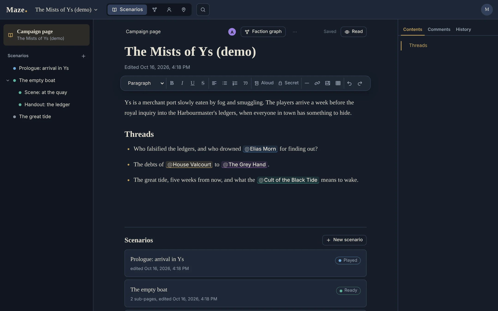

Scenarios you write together
A campaign page, scenarios and nested sub-pages for acts, scenes and handouts, each with a status: draft, ready, in progress or played.
- Read-aloud and GM secret boxes, tables, images, templates, a reading mode and clean printing.
- @ mentions of NPCs, factions and places, which link the page to their sheets.
- Real-time collaboration: several GMs edit the same page and see each other's cursors. Offline edits are merged on reconnection; what cannot be merged is kept in the page history.
- Comment threads anchored to passages, and a version history with named versions and one-click restore.
